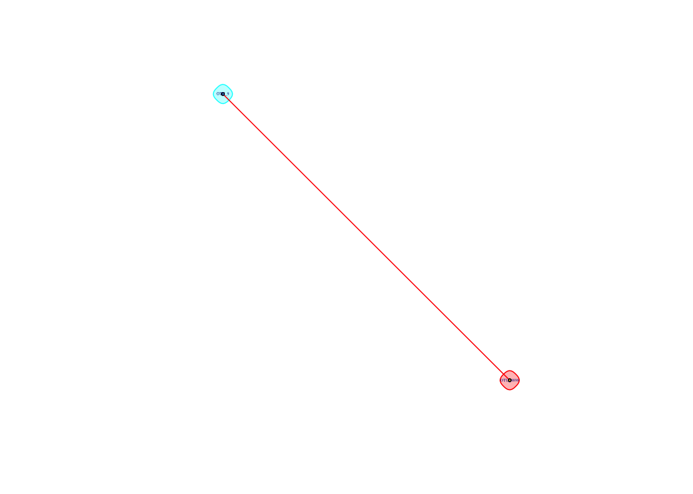

Bacteria only
library(data.table, warn.conflicts = FALSE)
library(igraph, warn.conflicts = FALSE)taxa is the look-up table for the OTUs. cooccurrence_data contains pairwise Spearman correlation ranks for pairs of OTUs.
taxa <- data.table(read.delim("./data/bacteria/bacteria_classified_otus"));colnames(taxa)<-c("OTU",colnames(taxa[,-1]))
head(taxa)## OTU domain phylum class
## 1: OTU_1 Bacteria Cyanobacteria/Chloroplast Chloroplast
## 2: OTU_2 Bacteria unclassified_Bacteria unclassified_Bacteria
## 3: OTU_3 Bacteria Proteobacteria Alphaproteobacteria
## 4: OTU_4 Bacteria Proteobacteria Gammaproteobacteria
## 5: OTU_5 Bacteria Proteobacteria Betaproteobacteria
## 6: OTU_6 Bacteria Proteobacteria Gammaproteobacteria
## order family genus
## 1: unclassified_Chloroplast Chloroplast Streptophyta
## 2: unclassified_Bacteria unclassified_Bacteria unclassified_Bacteria
## 3: Rhodospirillales Acetobacteraceae Neokomagataea
## 4: Pseudomonadales Moraxellaceae Acinetobacter
## 5: Burkholderiales Burkholderiaceae Burkholderia
## 6: Pseudomonadales Pseudomonadaceae Pseudomonascooccurrence_data <- data.table(read.table("./data/bacteria/bacteria_cooccurrence",
col.names = c("treatment", "OTU_1", "OTU_2", "rho", "p")))
head(cooccurrence_data)## treatment OTU_1 OTU_2 rho p
## 1: Bagged OTU_5142 OTU_5257 0.521706 1.62049e-05
## 2: Bagged OTU_5142 OTU_3925 0.245753 5.62527e-02
## 3: Bagged OTU_5142 OTU_2529 0.430690 5.30627e-04
## 4: Bagged OTU_5142 OTU_5823 0.251251 5.07966e-02
## 5: Bagged OTU_5142 OTU_162 0.449131 2.82600e-04
## 6: Bagged OTU_5142 OTU_4153 0.368088 3.51595e-03We process coocurrence_data by removing OTU interactions non-significant \(\rho\) values by filtering out those with a \(p\)-value less than \(0.05\), then filtering out cyanobacteria and choloroplast data, as well as all observations from bird samples:
cooccurrence_data <- cooccurrence_data[p <= 0.05]
cooccurrence_data <- cooccurrence_data[, -5] # Remove p-values from table
remove <- taxa[which(taxa[[4]] %in% c("Cyanobacteria","Chloroplast")),]$OTU
taxa <- taxa[-c(remove),]
complete_data <- cooccurrence_data[-c(which(apply(cooccurrence_data, 1, function(x) any(remove %in% x)))),]
bird_data <- cooccurrence_data[treatment == "Bird", ]
complete_data <- cooccurrence_data[treatment != "Bird", ]We then remove all edges that are \(\textit{not}\) connected to the indicated OTUs of interest:
otus_of_interest <- c("Acinetobacter", "Gluconobacter", "Neokomagataea", "erwinia", "Pantoea", "resenbergiella", "Asaia", "Lactobacillus", "Pseudomonas")
otus_of_interest <- taxa[which(apply(taxa, 1, function(x) any(otus_of_interest %in% x))),]$OTU
trimmed_data <- complete_data[which(apply(complete_data, 1, function(x) any(otus_of_interest %in% x))), ]
head(trimmed_data)## treatment OTU_1 OTU_2 rho
## 1: Bagged OTU_5142 OTU_888 0.310852
## 2: Bagged OTU_5257 OTU_11 0.322057
## 3: Bagged OTU_5616 OTU_64 0.273840
## 4: Bagged OTU_3925 OTU_70 0.376471
## 5: Bagged OTU_5872 OTU_635 0.316777
## 6: Bagged OTU_1546 OTU_635 0.328961We seperate the coocurrence data into a positive and negative group.
trimmed_positive_weights <- trimmed_data[trimmed_data[['rho']] > 0]
head(trimmed_positive_weights)## treatment OTU_1 OTU_2 rho
## 1: Bagged OTU_5142 OTU_888 0.310852
## 2: Bagged OTU_5257 OTU_11 0.322057
## 3: Bagged OTU_5616 OTU_64 0.273840
## 4: Bagged OTU_3925 OTU_70 0.376471
## 5: Bagged OTU_5872 OTU_635 0.316777
## 6: Bagged OTU_1546 OTU_635 0.328961trimmed_negative_weights <- trimmed_data[trimmed_data[['rho']] < 0]
head(trimmed_negative_weights)## treatment OTU_1 OTU_2 rho
## 1: Bagged OTU_6 OTU_3492 -0.254160
## 2: Bagged OTU_6 OTU_5398 -0.258791
## 3: Bagged OTU_6 OTU_21 -0.316472
## 4: Bagged OTU_6 OTU_5 -0.308091
## 5: Bagged OTU_3 OTU_8 -0.261619
## 6: Bagged OTU_5 OTU_27 -0.262223We’ll look at the positive and negative networks for each of the three treatments, as well as when all the treatments are combined together.
Trimmed Data
All the following analysis is performed on the trimmed data set. Specifically, this analysis only examines interactions between Acinetobacter, Gluconobacter, Neokomagataea, erwinia, Pantoea, resenbergiella, Asaia, Lactobacillus, Pseudomonas
Exposed Communities
Positive weights
We create a directed graph weighted by Spearman correlation for the Exposed treatment for those OTUs that are positively correlated to each other:
exposed_data_positive <- trimmed_positive_weights[treatment == "Exposed"]
exposed_data_positive <- exposed_data_positive[, -1]
gr_exposed_positive <- graph.data.frame(exposed_data_positive, directed = FALSE)
plot(gr_exposed_positive, vertex.size = 3,
vertex.label.cex = 0.25)
To determine communities, we use cluster_fast_greedy, which does greedy (local) optimization of the graph’s modularity score.
exposed_communities_greedy_positive <- cluster_fast_greedy(gr_exposed_positive, weights = E(gr_exposed_positive)$rho)
plot(exposed_communities_greedy_positive, gr_exposed_positive,
layout = layout.fruchterman.reingold(gr_exposed_positive),
rescaled = TRUE,
vertex.size = 2,
vertex.label.cex = 0.25
) The modularity of the community structure is:
The modularity of the community structure is:
tep.mod <- modularity(gr_exposed_positive, membership(exposed_communities_greedy_positive))Note the community by itself. The members of this community are:
communities(exposed_communities_greedy_positive)[[6]]## [1] "OTU_3115" "OTU_4345" "OTU_5778" "OTU_5776" "OTU_5324" "OTU_4036"
## [7] "OTU_4191" "OTU_4337" "OTU_3986" "OTU_6" "OTU_3477" "OTU_8"
## [13] "OTU_28" "OTU_151" "OTU_3979" "OTU_3883"taxa[OTU %in% communities(exposed_communities_greedy_positive)[[6]]]## OTU domain phylum class
## 1: OTU_6 Bacteria Proteobacteria Gammaproteobacteria
## 2: OTU_8 Bacteria Bacteroidetes Flavobacteriia
## 3: OTU_28 Bacteria Firmicutes Bacilli
## 4: OTU_151 Bacteria Proteobacteria Alphaproteobacteria
## 5: OTU_3115 Bacteria Firmicutes Bacilli
## 6: OTU_3477 Archaea Woesearchaeota unclassified_Woesearchaeota
## 7: OTU_3883 Bacteria Parcubacteria unclassified_Parcubacteria
## 8: OTU_3979 Bacteria unclassified_Bacteria unclassified_Bacteria
## 9: OTU_3986 Bacteria Parcubacteria unclassified_Parcubacteria
## 10: OTU_4036 Bacteria Proteobacteria Deltaproteobacteria
## 11: OTU_4191 Bacteria unclassified_Bacteria unclassified_Bacteria
## 12: OTU_4337 Bacteria Firmicutes Clostridia
## 13: OTU_4345 Bacteria Proteobacteria Gammaproteobacteria
## order family
## 1: Pseudomonadales Pseudomonadaceae
## 2: Flavobacteriales Flavobacteriaceae
## 3: Bacillales Paenibacillaceae 1
## 4: Rhizobiales Beijerinckiaceae
## 5: Bacillales Bacillaceae 2
## 6: unclassified_Woesearchaeota unclassified_Woesearchaeota
## 7: unclassified_Parcubacteria unclassified_Parcubacteria
## 8: unclassified_Bacteria unclassified_Bacteria
## 9: unclassified_Parcubacteria unclassified_Parcubacteria
## 10: Myxococcales unclassified_Myxococcales
## 11: unclassified_Bacteria unclassified_Bacteria
## 12: Clostridiales Lachnospiraceae
## 13: Aeromonadales Aeromonadaceae
## genus
## 1: Pseudomonas
## 2: Soonwooa
## 3: Paenibacillus
## 4: Beijerinckia
## 5: Lentibacillus
## 6: Woesearchaeota Incertae Sedis AR16
## 7: Parcubacteria_genera_incertae_sedis
## 8: unclassified_Bacteria
## 9: Parcubacteria_genera_incertae_sedis
## 10: unclassified_Myxococcales
## 11: unclassified_Bacteria
## 12: unclassified_Lachnospiraceae
## 13: unclassified_AeromonadaceaeAt the center of this community is OTU_6:
taxa[OTU == "OTU_6"]## OTU domain phylum class order
## 1: OTU_6 Bacteria Proteobacteria Gammaproteobacteria Pseudomonadales
## family genus
## 1: Pseudomonadaceae PseudomonasNegative Weights
We repeat the above process for the negatively correlated OTUs:
exposed_data_negative <- trimmed_negative_weights[treatment == "Exposed"]
exposed_data_negative <- exposed_data_negative[, -1]
exposed_data_negative[[3]] <- abs(exposed_data_negative[[3]])
gr_exposed_negative <- graph.data.frame(exposed_data_negative, directed = FALSE)
plot(gr_exposed_negative, vertex.size = 3,
vertex.label.cex = 0.25)
exposed_communities_greedy_negative <- cluster_fast_greedy(gr_exposed_negative, weights = E(gr_exposed_negative)$rho)
plot(exposed_communities_greedy_negative, gr_exposed_negative,
layout = layout.fruchterman.reingold(gr_exposed_negative),
rescaled = TRUE,
vertex.size = 2, vertex.label.cex = 0.75)
The modularity of the community structure is:
ten.mod <- modularity(gr_exposed_negative, membership(exposed_communities_greedy_negative))We again find OTU_6 as the center of a community. Below are the OTUs in this community. Notice that they are mostly $:
taxa[OTU %in% communities(exposed_communities_greedy_negative)[[1]]]## OTU domain phylum class
## 1: OTU_6 Bacteria Proteobacteria Gammaproteobacteria
## 2: OTU_16 Bacteria Proteobacteria Betaproteobacteria
## 3: OTU_18 Bacteria Proteobacteria Gammaproteobacteria
## 4: OTU_20 Bacteria Proteobacteria Gammaproteobacteria
## 5: OTU_21 Bacteria Proteobacteria Alphaproteobacteria
## 6: OTU_45 Bacteria Proteobacteria Betaproteobacteria
## 7: OTU_336 Bacteria Proteobacteria Gammaproteobacteria
## 8: OTU_395 Bacteria Proteobacteria Alphaproteobacteria
## 9: OTU_446 Bacteria Actinobacteria Actinobacteria
## 10: OTU_1035 Bacteria Proteobacteria Deltaproteobacteria
## 11: OTU_1076 Bacteria Firmicutes Clostridia
## 12: OTU_2168 Bacteria Verrucomicrobia Opitutae
## 13: OTU_3950 Bacteria Proteobacteria Alphaproteobacteria
## 14: OTU_4161 Bacteria Proteobacteria Deltaproteobacteria
## 15: OTU_4222 Bacteria Proteobacteria Gammaproteobacteria
## 16: OTU_4227 Bacteria Proteobacteria Betaproteobacteria
## 17: OTU_4387 Bacteria Actinobacteria Actinobacteria
## order family
## 1: Pseudomonadales Pseudomonadaceae
## 2: Rhodocyclales Rhodocyclaceae
## 3: Pseudomonadales Moraxellaceae
## 4: Xanthomonadales Xanthomonadaceae
## 5: Sphingomonadales Erythrobacteraceae
## 6: Burkholderiales Burkholderiaceae
## 7: unclassified_Gammaproteobacteria unclassified_Gammaproteobacteria
## 8: Rhizobiales Bradyrhizobiaceae
## 9: Actinomycetales Nocardioidaceae
## 10: Desulfovibrionales Desulfovibrionaceae
## 11: Clostridiales Lachnospiraceae
## 12: Opitutales Opitutaceae
## 13: Rhodospirillales Rhodospirillaceae
## 14: Bdellovibrionales Bdellovibrionaceae
## 15: Enterobacteriales Enterobacteriaceae
## 16: Burkholderiales Comamonadaceae
## 17: Actinomycetales Actinomycetaceae
## genus
## 1: Pseudomonas
## 2: Dechloromonas
## 3: Enhydrobacter
## 4: Xanthomonas
## 5: unclassified_Erythrobacteraceae
## 6: Cupriavidus
## 7: unclassified_Gammaproteobacteria
## 8: unclassified_Bradyrhizobiaceae
## 9: Nocardioides
## 10: Desulfovibrio
## 11: Clostridium XlVa
## 12: Opitutus
## 13: unclassified_Rhodospirillaceae
## 14: Bdellovibrio
## 15: unclassified_Enterobacteriaceae
## 16: unclassified_Comamonadaceae
## 17: ActinomycesSomething else to note of interest is OTU_5, another \(\textit{Proteobacteria}\):
taxa[OTU == "OTU_5"]## OTU domain phylum class order
## 1: OTU_5 Bacteria Proteobacteria Betaproteobacteria Burkholderiales
## family genus
## 1: Burkholderiaceae BurkholderiaOf interest is that OTU_5 is in its own cluster, separate from OTU_6, and that there is no overlap in their own communities. Though it is not shown here, we will see here that OTU_5 plays a role similar to that of OTU_6 - a highly central node in its own community.
Caged Communities
Positive weights
plot(caged_communities_greedy_positive, gr_caged_positive,
layout = layout.fruchterman.reingold(gr_caged_positive),
rescaled = TRUE,
vertex.size = 2,
vertex.label.cex = 0.5
)
The modularity of the community structure is:
tcp.mod <- modularity(gr_caged_positive, membership(caged_communities_greedy_positive))We again find OTU_6 as the central member of a cluster that is well-separated from the rest of the community. The OTUs in this cluster are:
taxa[OTU %in% communities(caged_communities_greedy_positive)[[7]]]## OTU domain phylum class
## 1: OTU_6 Bacteria Proteobacteria Gammaproteobacteria
## 2: OTU_28 Bacteria Firmicutes Bacilli
## 3: OTU_148 Bacteria Bacteroidetes Sphingobacteriia
## 4: OTU_157 Bacteria Proteobacteria Alphaproteobacteria
## 5: OTU_510 Bacteria unclassified_Bacteria unclassified_Bacteria
## 6: OTU_3115 Bacteria Firmicutes Bacilli
## 7: OTU_3986 Bacteria Parcubacteria unclassified_Parcubacteria
## 8: OTU_4036 Bacteria Proteobacteria Deltaproteobacteria
## order family
## 1: Pseudomonadales Pseudomonadaceae
## 2: Bacillales Paenibacillaceae 1
## 3: Sphingobacteriales Saprospiraceae
## 4: Rhodobacterales Rhodobacteraceae
## 5: unclassified_Bacteria unclassified_Bacteria
## 6: Bacillales Bacillaceae 2
## 7: unclassified_Parcubacteria unclassified_Parcubacteria
## 8: Myxococcales unclassified_Myxococcales
## genus
## 1: Pseudomonas
## 2: Paenibacillus
## 3: unclassified_Saprospiraceae
## 4: Rubellimicrobium
## 5: unclassified_Bacteria
## 6: Lentibacillus
## 7: Parcubacteria_genera_incertae_sedis
## 8: unclassified_MyxococcalesNegative Weights
caged_data_negative <- trimmed_negative_weights[treatment == "Caged"]
caged_data_negative <- caged_data_negative[, -1]
caged_data_negative[[3]] <- abs(caged_data_negative[[3]])
gr_caged_negative <- graph.data.frame(caged_data_negative, directed = FALSE)
caged_communities_greedy_negative <- cluster_fast_greedy(gr_caged_negative, weights = E(gr_caged_negative)$rho)
plot(caged_communities_greedy_negative, gr_caged_negative,
layout = layout.fruchterman.reingold(gr_caged_negative),
rescaled = TRUE,
vertex.size = 2, vertex.label.cex = 0.75)
The modularity of the community structure is:
tcn.mod <- modularity(gr_caged_negative, membership(caged_communities_greedy_negative))The OTUs in the same community of OTU_6 are:
taxa[OTU %in% communities(caged_communities_greedy_negative)[[2]]]## OTU domain phylum class
## 1: OTU_6 Bacteria Proteobacteria Gammaproteobacteria
## 2: OTU_9 Bacteria Firmicutes Bacilli
## 3: OTU_233 Bacteria unclassified_Bacteria unclassified_Bacteria
## order family genus
## 1: Pseudomonadales Pseudomonadaceae Pseudomonas
## 2: Bacillales Staphylococcaceae Staphylococcus
## 3: unclassified_Bacteria unclassified_Bacteria unclassified_BacteriaAs mentioned above, we see OTU_5 negatively correlated with OTU_6 and as highly central node. While we don’t see \(\textit{Proteobacteria}\) in the OTU_6 cluster, the OTUs in the cluster of OTU_5 are all \(\textit{Proteobacteria}\):
taxa[OTU %in% communities(caged_communities_greedy_negative)[[1]]]## OTU domain phylum class order
## 1: OTU_3 Bacteria Proteobacteria Alphaproteobacteria Rhodospirillales
## 2: OTU_5 Bacteria Proteobacteria Betaproteobacteria Burkholderiales
## 3: OTU_64 Bacteria Proteobacteria Gammaproteobacteria Pseudomonadales
## 4: OTU_4161 Bacteria Proteobacteria Deltaproteobacteria Bdellovibrionales
## family genus
## 1: Acetobacteraceae Neokomagataea
## 2: Burkholderiaceae Burkholderia
## 3: Pseudomonadaceae Pseudomonas
## 4: Bdellovibrionaceae BdellovibrioBagged Communities
Positive weights
bagged_data_positive <- trimmed_positive_weights[treatment == "Bagged"]
bagged_data_positive <- bagged_data_positive[, -1]
gr_bagged_positive <- graph.data.frame(bagged_data_positive, directed = FALSE)
bagged_communities_greedy_positive <- cluster_fast_greedy(gr_bagged_positive, weights = E(gr_bagged_positive)$rho)
plot(bagged_communities_greedy_positive, gr_bagged_positive,
layout = layout.fruchterman.reingold(gr_bagged_positive),
rescaled = TRUE,
vertex.size = 2,
vertex.label.cex = 0.25
)
The modularity score of the community structure is:
tbp.mod <- modularity(gr_bagged_positive, membership(bagged_communities_greedy_positive))For completeness, here are the OTUs in the same community as OTU_6:
taxa[OTU %in% communities(bagged_communities_greedy_positive)[[1]]]## OTU domain phylum class
## 1: OTU_6 Bacteria Proteobacteria Gammaproteobacteria
## 2: OTU_7 Bacteria Proteobacteria Gammaproteobacteria
## 3: OTU_8 Bacteria Bacteroidetes Flavobacteriia
## 4: OTU_13 Bacteria Actinobacteria Actinobacteria
## 5: OTU_18 Bacteria Proteobacteria Gammaproteobacteria
## 6: OTU_20 Bacteria Proteobacteria Gammaproteobacteria
## 7: OTU_28 Bacteria Firmicutes Bacilli
## 8: OTU_40 Bacteria Firmicutes Bacilli
## 9: OTU_45 Bacteria Proteobacteria Betaproteobacteria
## 10: OTU_52 Bacteria Actinobacteria Actinobacteria
## 11: OTU_74 Bacteria Firmicutes Bacilli
## 12: OTU_81 Bacteria Actinobacteria Actinobacteria
## 13: OTU_153 Bacteria Firmicutes Clostridia
## 14: OTU_219 Bacteria Actinobacteria Actinobacteria
## 15: OTU_221 Bacteria Proteobacteria Alphaproteobacteria
## 16: OTU_339 Bacteria Proteobacteria Alphaproteobacteria
## 17: OTU_351 Bacteria Proteobacteria Alphaproteobacteria
## 18: OTU_510 Bacteria unclassified_Bacteria unclassified_Bacteria
## 19: OTU_705 Bacteria unclassified_Bacteria unclassified_Bacteria
## 20: OTU_841 Bacteria Bacteroidetes Sphingobacteriia
## 21: OTU_1159 Bacteria Actinobacteria Actinobacteria
## 22: OTU_1337 Bacteria Bacteroidetes Bacteroidia
## 23: OTU_1546 Bacteria unclassified_Bacteria unclassified_Bacteria
## 24: OTU_1700 Bacteria Verrucomicrobia Opitutae
## 25: OTU_1708 Bacteria Firmicutes Clostridia
## 26: OTU_2025 Bacteria Proteobacteria Gammaproteobacteria
## 27: OTU_2350 Bacteria unclassified_Bacteria unclassified_Bacteria
## 28: OTU_2734 Bacteria Proteobacteria Gammaproteobacteria
## 29: OTU_2898 Bacteria Cyanobacteria/Chloroplast Chloroplast
## 30: OTU_3780 Bacteria Proteobacteria Betaproteobacteria
## 31: OTU_3883 Bacteria Parcubacteria unclassified_Parcubacteria
## 32: OTU_4036 Bacteria Proteobacteria Deltaproteobacteria
## 33: OTU_4191 Bacteria unclassified_Bacteria unclassified_Bacteria
## 34: OTU_4228 Bacteria Bacteroidetes Flavobacteriia
## 35: OTU_4261 Bacteria Actinobacteria Actinobacteria
## 36: OTU_4447 Bacteria Chlamydiae Chlamydiia
## 37: OTU_4570 Bacteria Planctomycetes Planctomycetia
## 38: OTU_4597 Bacteria Firmicutes Bacilli
## 39: OTU_4624 Bacteria Cyanobacteria/Chloroplast Chloroplast
## OTU domain phylum class
## order family
## 1: Pseudomonadales Pseudomonadaceae
## 2: Enterobacteriales Enterobacteriaceae
## 3: Flavobacteriales Flavobacteriaceae
## 4: Actinomycetales Corynebacteriaceae
## 5: Pseudomonadales Moraxellaceae
## 6: Xanthomonadales Xanthomonadaceae
## 7: Bacillales Paenibacillaceae 1
## 8: Bacillales Bacillaceae 1
## 9: Burkholderiales Burkholderiaceae
## 10: Actinomycetales Geodermatophilaceae
## 11: Bacillales Paenibacillaceae 1
## 12: Actinomycetales Micrococcaceae
## 13: Clostridiales Lachnospiraceae
## 14: Actinomycetales Mycobacteriaceae
## 15: Rhodobacterales Rhodobacteraceae
## 16: Sphingomonadales Sphingomonadaceae
## 17: Rhodobacterales Rhodobacteraceae
## 18: unclassified_Bacteria unclassified_Bacteria
## 19: unclassified_Bacteria unclassified_Bacteria
## 20: Sphingobacteriales Sphingobacteriaceae
## 21: Actinomycetales unclassified_Actinomycetales
## 22: Bacteroidales unclassified_Bacteroidales
## 23: unclassified_Bacteria unclassified_Bacteria
## 24: Opitutales Opitutaceae
## 25: Clostridiales unclassified_Clostridiales
## 26: Oceanospirillales Halomonadaceae
## 27: unclassified_Bacteria unclassified_Bacteria
## 28: Alteromonadales Shewanellaceae
## 29: unclassified_Chloroplast Chloroplast
## 30: Burkholderiales Alcaligenaceae
## 31: unclassified_Parcubacteria unclassified_Parcubacteria
## 32: Myxococcales unclassified_Myxococcales
## 33: unclassified_Bacteria unclassified_Bacteria
## 34: Flavobacteriales Flavobacteriaceae
## 35: Actinomycetales Corynebacteriaceae
## 36: Chlamydiales Parachlamydiaceae
## 37: Planctomycetales Planctomycetaceae
## 38: Lactobacillales Carnobacteriaceae
## 39: unclassified_Chloroplast Chloroplast
## order family
## genus
## 1: Pseudomonas
## 2: Pantoea
## 3: Soonwooa
## 4: Corynebacterium
## 5: Enhydrobacter
## 6: Xanthomonas
## 7: Paenibacillus
## 8: Anoxybacillus
## 9: Cupriavidus
## 10: Modestobacter
## 11: Paenibacillus
## 12: Arthrobacter
## 13: Fusicatenibacter
## 14: Mycobacterium
## 15: Rhodobacter
## 16: Sphingobium
## 17: Rubellimicrobium
## 18: unclassified_Bacteria
## 19: unclassified_Bacteria
## 20: Pedobacter
## 21: unclassified_Actinomycetales
## 22: unclassified_Bacteroidales
## 23: unclassified_Bacteria
## 24: Opitutus
## 25: unclassified_Clostridiales
## 26: Zymobacter
## 27: unclassified_Bacteria
## 28: Shewanella
## 29: Streptophyta
## 30: Achromobacter
## 31: Parcubacteria_genera_incertae_sedis
## 32: unclassified_Myxococcales
## 33: unclassified_Bacteria
## 34: Flavobacterium
## 35: Corynebacterium
## 36: Neochlamydia
## 37: Rubinisphaera
## 38: Granulicatella
## 39: Streptophyta
## genusOTU_5 was not present in this graph.
'OTU_5' %in% V(gr_bagged_positive)$name## [1] FALSENegative Weights
bagged_data_negative <- trimmed_negative_weights[treatment == "Bagged"]
bagged_data_negative <- bagged_data_negative[, -1]
bagged_data_negative[[3]] <- abs(bagged_data_negative[[3]])
gr_bagged_negative <- graph.data.frame(bagged_data_negative, directed = FALSE)
bagged_communities_greedy_negative <- cluster_fast_greedy(gr_bagged_negative, weights = E(gr_bagged_negative)$rho)
plot(bagged_communities_greedy_negative, gr_bagged_negative,
layout = layout.fruchterman.reingold(gr_bagged_negative),
rescaled = TRUE,
vertex.size = 2, vertex.label.cex = 0.75)
Modularity score:
tbn.mod <- modularity(gr_bagged_negative, membership(bagged_communities_greedy_negative))taxa[OTU %in% communities(bagged_communities_greedy_negative)[[1]]]## OTU domain phylum class
## 1: OTU_6 Bacteria Proteobacteria Gammaproteobacteria
## 2: OTU_21 Bacteria Proteobacteria Alphaproteobacteria
## 3: OTU_3492 Bacteria Proteobacteria unclassified_Proteobacteria
## order family
## 1: Pseudomonadales Pseudomonadaceae
## 2: Sphingomonadales Erythrobacteraceae
## 3: unclassified_Proteobacteria unclassified_Proteobacteria
## genus
## 1: Pseudomonas
## 2: unclassified_Erythrobacteraceae
## 3: unclassified_Proteobacteriataxa[OTU %in% communities(bagged_communities_greedy_negative)[[2]]]## OTU domain phylum class order
## 1: OTU_5 Bacteria Proteobacteria Betaproteobacteria Burkholderiales
## 2: OTU_27 Bacteria Firmicutes Bacilli Lactobacillales
## family genus
## 1: Burkholderiaceae Burkholderia
## 2: Lactobacillaceae LactobacillusAll Treatments
We will now look at all treatments together. Note that data points from Bird samples have already been removed.
Positive Weights
trimmed_all_positive <- trimmed_positive_weights[, -1]
gr_trimmed_all_positive <- graph.data.frame(trimmed_all_positive, directed = FALSE)
trimmed_all_positive_communities <- cluster_fast_greedy(gr_trimmed_all_positive,
weights = E(gr_trimmed_all_positive)$rho)## Error in cluster_fast_greedy(gr_trimmed_all_positive, weights = E(gr_trimmed_all_positive)$rho): At fast_community.c:639 : fast-greedy community finding works only on graphs without multiple edges, Invalid valueBecause all the treatments are being combined into one graph, there can be multiple (parallel) edges between OTUs. The clustering algorithm we have been using requires that there not be multiple edges between OTUs. We will collapse multiple edges by taking their mean - that is the mean correlation of the two OTUs across all treatments. (Are there potential problems with this collapsing rule?)
gr_trimmed_all_positive <- simplify(gr_trimmed_all_positive,
edge.attr.comb = "mean")
trimmed_all_positive_communities <- cluster_fast_greedy(gr_trimmed_all_positive,
weights = E(gr_trimmed_all_positive)$rho)
plot(trimmed_all_positive_communities, gr_trimmed_all_positive,
layout = layout.fruchterman.reingold(gr_trimmed_all_positive),
rescaled = TRUE,
vertex.size = 2,
vertex.label.cex = 0.25
)
What’s interesting here is that the graph has a lot of “spokes,” which hints at important OTUs.
Modularity score:
tap.mod <- modularity(gr_trimmed_all_positive, membership(trimmed_all_positive_communities))Negative Weights
trimmed_all_negative <- trimmed_negative_weights[, -1]
trimmed_all_negative[[3]] <- abs(trimmed_all_negative[[3]])
gr_trimmed_all_negative <- graph.data.frame(trimmed_all_negative, directed = FALSE)
gr_trimmed_all_negative <- simplify(gr_trimmed_all_negative,
edge.attr.comb = "mean")
trimmed_all_negative_communities <- cluster_fast_greedy(gr_trimmed_all_negative,
weights = E(gr_trimmed_all_negative)$rho)
plot(trimmed_all_negative_communities, gr_trimmed_all_negative,
layout = layout.fruchterman.reingold(gr_trimmed_all_negative),
rescaled = TRUE,
vertex.size = 2,
vertex.label.cex = 0.25
)
OTU_6 is again in the center of a community. The members of that community are:
taxa[OTU %in% communities(trimmed_all_negative_communities)[[2]]]## OTU domain phylum class order
## 1: OTU_3 Bacteria Proteobacteria Alphaproteobacteria Rhodospirillales
## 2: OTU_5 Bacteria Proteobacteria Betaproteobacteria Burkholderiales
## 3: OTU_7 Bacteria Proteobacteria Gammaproteobacteria Enterobacteriales
## 4: OTU_8 Bacteria Bacteroidetes Flavobacteriia Flavobacteriales
## 5: OTU_9 Bacteria Firmicutes Bacilli Bacillales
## 6: OTU_27 Bacteria Firmicutes Bacilli Lactobacillales
## family genus
## 1: Acetobacteraceae Neokomagataea
## 2: Burkholderiaceae Burkholderia
## 3: Enterobacteriaceae Pantoea
## 4: Flavobacteriaceae Soonwooa
## 5: Staphylococcaceae Staphylococcus
## 6: Lactobacillaceae LactobacillusAnd we see a preponderence of \(\textit{proteobacteria}\). We also see the familiar pattern with OTU_5. The OTUs in this cluster are:
taxa[OTU %in% communities(trimmed_all_negative_communities)[[1]]]## OTU domain phylum class
## 1: OTU_6 Bacteria Proteobacteria Gammaproteobacteria
## 2: OTU_16 Bacteria Proteobacteria Betaproteobacteria
## 3: OTU_18 Bacteria Proteobacteria Gammaproteobacteria
## 4: OTU_20 Bacteria Proteobacteria Gammaproteobacteria
## 5: OTU_21 Bacteria Proteobacteria Alphaproteobacteria
## 6: OTU_45 Bacteria Proteobacteria Betaproteobacteria
## 7: OTU_233 Bacteria unclassified_Bacteria unclassified_Bacteria
## 8: OTU_336 Bacteria Proteobacteria Gammaproteobacteria
## 9: OTU_395 Bacteria Proteobacteria Alphaproteobacteria
## 10: OTU_446 Bacteria Actinobacteria Actinobacteria
## 11: OTU_1035 Bacteria Proteobacteria Deltaproteobacteria
## 12: OTU_1076 Bacteria Firmicutes Clostridia
## 13: OTU_2168 Bacteria Verrucomicrobia Opitutae
## 14: OTU_3492 Bacteria Proteobacteria unclassified_Proteobacteria
## 15: OTU_3950 Bacteria Proteobacteria Alphaproteobacteria
## 16: OTU_4222 Bacteria Proteobacteria Gammaproteobacteria
## 17: OTU_4227 Bacteria Proteobacteria Betaproteobacteria
## 18: OTU_4387 Bacteria Actinobacteria Actinobacteria
## order family
## 1: Pseudomonadales Pseudomonadaceae
## 2: Rhodocyclales Rhodocyclaceae
## 3: Pseudomonadales Moraxellaceae
## 4: Xanthomonadales Xanthomonadaceae
## 5: Sphingomonadales Erythrobacteraceae
## 6: Burkholderiales Burkholderiaceae
## 7: unclassified_Bacteria unclassified_Bacteria
## 8: unclassified_Gammaproteobacteria unclassified_Gammaproteobacteria
## 9: Rhizobiales Bradyrhizobiaceae
## 10: Actinomycetales Nocardioidaceae
## 11: Desulfovibrionales Desulfovibrionaceae
## 12: Clostridiales Lachnospiraceae
## 13: Opitutales Opitutaceae
## 14: unclassified_Proteobacteria unclassified_Proteobacteria
## 15: Rhodospirillales Rhodospirillaceae
## 16: Enterobacteriales Enterobacteriaceae
## 17: Burkholderiales Comamonadaceae
## 18: Actinomycetales Actinomycetaceae
## genus
## 1: Pseudomonas
## 2: Dechloromonas
## 3: Enhydrobacter
## 4: Xanthomonas
## 5: unclassified_Erythrobacteraceae
## 6: Cupriavidus
## 7: unclassified_Bacteria
## 8: unclassified_Gammaproteobacteria
## 9: unclassified_Bradyrhizobiaceae
## 10: Nocardioides
## 11: Desulfovibrio
## 12: Clostridium XlVa
## 13: Opitutus
## 14: unclassified_Proteobacteria
## 15: unclassified_Rhodospirillaceae
## 16: unclassified_Enterobacteriaceae
## 17: unclassified_Comamonadaceae
## 18: ActinomycesModularity score:
tan.mod <- modularity(gr_trimmed_all_negative, membership(trimmed_all_negative_communities))Complete Data
We reproduce the above analysis on the complete data sat. Again, we separate the data into positive and negative networks:
complete_positive_weights <- complete_data[complete_data[['rho']] > 0]
head(complete_positive_weights)## treatment OTU_1 OTU_2 rho
## 1: Bagged OTU_5142 OTU_5257 0.521706
## 2: Bagged OTU_5142 OTU_2529 0.430690
## 3: Bagged OTU_5142 OTU_162 0.449131
## 4: Bagged OTU_5142 OTU_4153 0.368088
## 5: Bagged OTU_5142 OTU_3496 0.374365
## 6: Bagged OTU_5142 OTU_304 0.310852complete_negative_weights <- complete_data[complete_data[['rho']] < 0]
head(complete_negative_weights)## treatment OTU_1 OTU_2 rho
## 1: Bagged OTU_3559 OTU_2168 -0.265843
## 2: Bagged OTU_3559 OTU_5806 -0.253408
## 3: Bagged OTU_5257 OTU_8 -0.253046
## 4: Bagged OTU_5098 OTU_5970 -0.261365
## 5: Bagged OTU_5098 OTU_1934 -0.261263
## 6: Bagged OTU_2529 OTU_4227 -0.321220Exposed Communities
Positive Weights
complete_exposed_positive <- complete_positive_weights[treatment == "Exposed"]
complete_exposed_positive <- complete_exposed_positive[, -1]
gr_complete_exposed_positive <- graph.data.frame(complete_exposed_positive, directed = FALSE)
complete_exposed_positive_communities <- cluster_fast_greedy(gr_complete_exposed_positive,
weights = E(gr_complete_exposed_positive)$rho)
plot(complete_exposed_positive_communities, gr_complete_exposed_positive,
layout = layout.fruchterman.reingold(gr_complete_exposed_positive),
rescaled = TRUE,
vertex.size = 2,
vertex.label = NA
) Modularity:
Modularity:
cep.mod <- modularity(gr_complete_exposed_positive, membership(complete_exposed_positive_communities))Negative Weights
complete_exposed_negative <- complete_negative_weights[treatment == "Exposed"]
complete_exposed_negative <- complete_exposed_negative[, -1]
complete_exposed_negative[[3]] <- abs(complete_exposed_negative[[3]])
gr_complete_exposed_negative <- graph.data.frame(complete_exposed_negative, directed = FALSE)
complete_exposed_negative_communities <- cluster_fast_greedy(gr_complete_exposed_negative,
weights = E(gr_complete_exposed_negative)$rho)
plot(complete_exposed_negative_communities, gr_complete_exposed_negative,
layout = layout.fruchterman.reingold(gr_complete_exposed_negative),
rescaled = TRUE,
vertex.size = 2,
vertex.label = NA
) Modularity:
Modularity:
cen.mod <- modularity(gr_complete_exposed_negative, membership(complete_exposed_negative_communities))Caged Communities
Positive Weights
complete_caged_positive <- complete_positive_weights[treatment == "Caged"]
complete_caged_positive <- complete_caged_positive[, -1]
gr_complete_caged_positive <- graph.data.frame(complete_caged_positive, directed = FALSE)
complete_caged_positive_communities <- cluster_fast_greedy(gr_complete_caged_positive,
weights = E(gr_complete_caged_positive)$rho)
plot(complete_caged_positive_communities, gr_complete_caged_positive,
layout = layout.fruchterman.reingold(gr_complete_caged_positive),
rescaled = TRUE,
vertex.size = 2,
vertex.label = NA
)
Modularity:
ccp.mod <- modularity(gr_complete_caged_positive, membership(complete_caged_positive_communities))Negative Weights
complete_caged_negative <- complete_negative_weights[treatment == "Caged"]
complete_caged_negative <- complete_caged_negative[, -1]
complete_caged_negative[[3]] <- abs(complete_caged_negative[[3]])
gr_complete_caged_negative <- graph.data.frame(complete_caged_negative, directed = FALSE)
complete_caged_negative_communities <- cluster_fast_greedy(gr_complete_caged_negative,
weights = E(gr_complete_caged_negative)$rho)
plot(complete_caged_negative_communities, gr_complete_caged_negative,
layout = layout.fruchterman.reingold(gr_complete_caged_negative),
rescaled = TRUE,
vertex.size = 2,
vertex.label.cex = 0.5
)
Modularity:
ccn.mod <- modularity(gr_complete_caged_negative, membership(complete_caged_negative_communities))Again, the familiar pattern. However, OTU_6 has lower centrality in its cluster while OTU_5 remains highly central. The OTUs in the OTU_6 cluster are:
taxa[OTU %in% communities(complete_caged_negative_communities)[[1]]]## OTU domain phylum class
## 1: OTU_6 Bacteria Proteobacteria Gammaproteobacteria
## 2: OTU_7 Bacteria Proteobacteria Gammaproteobacteria
## 3: OTU_8 Bacteria Bacteroidetes Flavobacteriia
## 4: OTU_9 Bacteria Firmicutes Bacilli
## 5: OTU_233 Bacteria unclassified_Bacteria unclassified_Bacteria
## 6: OTU_4227 Bacteria Proteobacteria Betaproteobacteria
## order family genus
## 1: Pseudomonadales Pseudomonadaceae Pseudomonas
## 2: Enterobacteriales Enterobacteriaceae Pantoea
## 3: Flavobacteriales Flavobacteriaceae Soonwooa
## 4: Bacillales Staphylococcaceae Staphylococcus
## 5: unclassified_Bacteria unclassified_Bacteria unclassified_Bacteria
## 6: Burkholderiales Comamonadaceae unclassified_ComamonadaceaeIn the OTU_5 cluster:
taxa[OTU %in% communities(complete_caged_negative_communities)[[3]]]## OTU domain phylum class
## 1: OTU_3 Bacteria Proteobacteria Alphaproteobacteria
## 2: OTU_5 Bacteria Proteobacteria Betaproteobacteria
## 3: OTU_42 Bacteria Firmicutes Bacilli
## 4: OTU_43 Bacteria Actinobacteria Actinobacteria
## 5: OTU_110 Bacteria Cyanobacteria/Chloroplast Chloroplast
## 6: OTU_148 Bacteria Bacteroidetes Sphingobacteriia
## 7: OTU_156 Bacteria unclassified_Bacteria unclassified_Bacteria
## 8: OTU_260 Bacteria Proteobacteria Alphaproteobacteria
## 9: OTU_1205 Bacteria Bacteroidetes Cytophagia
## 10: OTU_3505 Bacteria Parcubacteria unclassified_Parcubacteria
## 11: OTU_3733 Bacteria Cyanobacteria/Chloroplast Chloroplast
## 12: OTU_3986 Bacteria Parcubacteria unclassified_Parcubacteria
## order family
## 1: Rhodospirillales Acetobacteraceae
## 2: Burkholderiales Burkholderiaceae
## 3: Bacillales Paenibacillaceae 1
## 4: Actinomycetales unclassified_Actinomycetales
## 5: unclassified_Chloroplast Chloroplast
## 6: Sphingobacteriales Saprospiraceae
## 7: unclassified_Bacteria unclassified_Bacteria
## 8: Rhizobiales Beijerinckiaceae
## 9: Cytophagales unclassified_Cytophagales
## 10: unclassified_Parcubacteria unclassified_Parcubacteria
## 11: unclassified_Chloroplast Chloroplast
## 12: unclassified_Parcubacteria unclassified_Parcubacteria
## genus
## 1: Neokomagataea
## 2: Burkholderia
## 3: Paenibacillus
## 4: unclassified_Actinomycetales
## 5: Bacillariophyta
## 6: unclassified_Saprospiraceae
## 7: unclassified_Bacteria
## 8: unclassified_Beijerinckiaceae
## 9: unclassified_Cytophagales
## 10: Parcubacteria_genera_incertae_sedis
## 11: Streptophyta
## 12: Parcubacteria_genera_incertae_sedisBagged Communities
Positive Weights
complete_bagged_positive <- complete_positive_weights[treatment == "Bagged"]
complete_bagged_positive <- complete_bagged_positive[, -1]
gr_complete_bagged_positive <- graph.data.frame(complete_bagged_positive, directed = FALSE)
complete_bagged_positive_communities <- cluster_fast_greedy(gr_complete_bagged_positive,
weights = E(gr_complete_bagged_positive)$rho)
plot(complete_bagged_positive_communities, gr_complete_bagged_positive,
layout = layout.fruchterman.reingold(gr_complete_bagged_positive),
rescaled = TRUE,
vertex.size = 2,
vertex.label.cex = 0.25
)
Modularity:
cbp.mod <- modularity(gr_complete_bagged_positive, membership(complete_bagged_positive_communities))Negative Weights
complete_bagged_negative <- complete_negative_weights[treatment == "Bagged"]
complete_bagged_negative <- complete_bagged_negative[, -1]
complete_bagged_negative[[3]] <- abs(complete_bagged_negative[[3]])
gr_complete_bagged_negative <- graph.data.frame(complete_bagged_negative, directed = FALSE)
complete_bagged_negative_communities <- cluster_fast_greedy(gr_complete_bagged_negative,
weights = E(gr_complete_bagged_negative)$rho)
plot(complete_bagged_negative_communities, gr_complete_bagged_negative,
layout = layout.fruchterman.reingold(gr_complete_bagged_negative),
rescaled = TRUE,
vertex.size = 2,
vertex.label.cex = 0.5
)
Modularity:
cbn.mod <- modularity(gr_complete_bagged_negative, membership(complete_bagged_negative_communities))Same story as in the caged samples for the complete data. The OTU_6 cluster:
taxa[OTU %in% communities(complete_bagged_negative_communities)[[1]]]## OTU domain phylum class
## 1: OTU_6 Bacteria Proteobacteria Gammaproteobacteria
## 2: OTU_21 Bacteria Proteobacteria Alphaproteobacteria
## 3: OTU_51 Bacteria Parcubacteria unclassified_Parcubacteria
## 4: OTU_131 Bacteria unclassified_Bacteria unclassified_Bacteria
## 5: OTU_510 Bacteria unclassified_Bacteria unclassified_Bacteria
## 6: OTU_3492 Bacteria Proteobacteria unclassified_Proteobacteria
## 7: OTU_4036 Bacteria Proteobacteria Deltaproteobacteria
## order family
## 1: Pseudomonadales Pseudomonadaceae
## 2: Sphingomonadales Erythrobacteraceae
## 3: unclassified_Parcubacteria unclassified_Parcubacteria
## 4: unclassified_Bacteria unclassified_Bacteria
## 5: unclassified_Bacteria unclassified_Bacteria
## 6: unclassified_Proteobacteria unclassified_Proteobacteria
## 7: Myxococcales unclassified_Myxococcales
## genus
## 1: Pseudomonas
## 2: unclassified_Erythrobacteraceae
## 3: Parcubacteria_genera_incertae_sedis
## 4: unclassified_Bacteria
## 5: unclassified_Bacteria
## 6: unclassified_Proteobacteria
## 7: unclassified_MyxococcalesThe OTU_5 cluster:
taxa[OTU %in% communities(complete_bagged_negative_communities)[[2]]]## OTU domain phylum class
## 1: OTU_5 Bacteria Proteobacteria Betaproteobacteria
## 2: OTU_27 Bacteria Firmicutes Bacilli
## 3: OTU_28 Bacteria Firmicutes Bacilli
## 4: OTU_233 Bacteria unclassified_Bacteria unclassified_Bacteria
## 5: OTU_3181 Bacteria unclassified_Bacteria unclassified_Bacteria
## 6: OTU_3509 Bacteria Proteobacteria Gammaproteobacteria
## 7: OTU_3603 Bacteria Proteobacteria Deltaproteobacteria
## 8: OTU_3646 Bacteria Proteobacteria Betaproteobacteria
## 9: OTU_4385 Bacteria unclassified_Bacteria unclassified_Bacteria
## 10: OTU_4598 Bacteria Cyanobacteria/Chloroplast Chloroplast
## 11: OTU_4616 Bacteria unclassified_Bacteria unclassified_Bacteria
## order family
## 1: Burkholderiales Burkholderiaceae
## 2: Lactobacillales Lactobacillaceae
## 3: Bacillales Paenibacillaceae 1
## 4: unclassified_Bacteria unclassified_Bacteria
## 5: unclassified_Bacteria unclassified_Bacteria
## 6: Oceanospirillales Halomonadaceae
## 7: Bdellovibrionales Bdellovibrionaceae
## 8: unclassified_Betaproteobacteria unclassified_Betaproteobacteria
## 9: unclassified_Bacteria unclassified_Bacteria
## 10: unclassified_Chloroplast Chloroplast
## 11: unclassified_Bacteria unclassified_Bacteria
## genus
## 1: Burkholderia
## 2: Lactobacillus
## 3: Paenibacillus
## 4: unclassified_Bacteria
## 5: unclassified_Bacteria
## 6: unclassified_Halomonadaceae
## 7: Vampirovibrio
## 8: unclassified_Betaproteobacteria
## 9: unclassified_Bacteria
## 10: Streptophyta
## 11: unclassified_BacteriaAll Treatments
Positive Weights
complete_all_positive <- complete_positive_weights[, -1]
gr_complete_all_positive <- graph.data.frame(complete_all_positive, directed = FALSE)
gr_complete_all_positive <- simplify(gr_complete_all_positive,
edge.attr.comb = "mean")
complete_all_positive_communities <- cluster_fast_greedy(gr_complete_all_positive,
weights = E(gr_complete_all_positive)$rho)
plot(complete_all_positive_communities, gr_complete_all_positive,
layout = layout.fruchterman.reingold(gr_complete_all_positive),
rescaled = TRUE,
vertex.size = 2,
vertex.label.cex = 0.25
)
Modularity score:
cap.mod <- modularity(gr_complete_all_positive, membership(complete_all_positive_communities))Negative Weights
complete_all_negative <- complete_negative_weights[, -1]
complete_all_negative[[3]] <- abs(complete_all_negative[[3]])
gr_complete_all_negative <- graph.data.frame(complete_all_negative, directed = FALSE)
gr_complete_all_negative <- simplify(gr_complete_all_negative,
edge.attr.comb = "mean")
complete_all_negative_communities <- cluster_fast_greedy(gr_complete_all_negative,
weights = E(gr_complete_all_negative)$rho)
plot(complete_all_negative_communities, gr_complete_all_negative,
layout = layout.fruchterman.reingold(gr_complete_all_negative),
rescaled = TRUE,
vertex.size = 2,
vertex.label.cex = 0.65
) Same story, but the communities aren’t as distinct. The OTUs in the
Same story, but the communities aren’t as distinct. The OTUs in the OTU_6 cluster:
Modularity score:
can.mod <- modularity(gr_complete_all_negative, membership(complete_all_negative_communities))taxa[OTU %in% communities(complete_all_negative_communities)[[2]]]## OTU domain phylum class
## 1: OTU_18 Bacteria Proteobacteria Gammaproteobacteria
## 2: OTU_21 Bacteria Proteobacteria Alphaproteobacteria
## 3: OTU_22 Bacteria Actinobacteria Actinobacteria
## 4: OTU_44 Bacteria Actinobacteria Actinobacteria
## 5: OTU_88 Bacteria Proteobacteria Gammaproteobacteria
## 6: OTU_131 Bacteria unclassified_Bacteria unclassified_Bacteria
## 7: OTU_164 Bacteria Deinococcus-Thermus Deinococci
## 8: OTU_172 Bacteria unclassified_Bacteria unclassified_Bacteria
## 9: OTU_256 Bacteria Actinobacteria Actinobacteria
## 10: OTU_510 Bacteria unclassified_Bacteria unclassified_Bacteria
## 11: OTU_669 Bacteria Firmicutes Bacilli
## 12: OTU_1934 Archaea Diapherotrites unclassified_Diapherotrites
## 13: OTU_4004 Archaea Diapherotrites unclassified_Diapherotrites
## 14: OTU_4153 Bacteria Proteobacteria Gammaproteobacteria
## 15: OTU_4191 Bacteria unclassified_Bacteria unclassified_Bacteria
## 16: OTU_4218 Bacteria Actinobacteria Actinobacteria
## order family
## 1: Pseudomonadales Moraxellaceae
## 2: Sphingomonadales Erythrobacteraceae
## 3: Actinomycetales unclassified_Actinomycetales
## 4: Actinomycetales Micrococcaceae
## 5: Xanthomonadales Sinobacteraceae
## 6: unclassified_Bacteria unclassified_Bacteria
## 7: Deinococcales Deinococcaceae
## 8: unclassified_Bacteria unclassified_Bacteria
## 9: Actinomycetales Micrococcaceae
## 10: unclassified_Bacteria unclassified_Bacteria
## 11: Bacillales Alicyclobacillaceae
## 12: unclassified_Diapherotrites unclassified_Diapherotrites
## 13: unclassified_Diapherotrites unclassified_Diapherotrites
## 14: Legionellales Coxiellaceae
## 15: unclassified_Bacteria unclassified_Bacteria
## 16: Actinomycetales Nocardioidaceae
## genus
## 1: Enhydrobacter
## 2: unclassified_Erythrobacteraceae
## 3: unclassified_Actinomycetales
## 4: Micrococcus
## 5: unclassified_Sinobacteraceae
## 6: unclassified_Bacteria
## 7: Deinococcus
## 8: unclassified_Bacteria
## 9: Rothia
## 10: unclassified_Bacteria
## 11: Alicyclobacillus
## 12: Candidatus Iainarchaeum
## 13: Candidatus Iainarchaeum
## 14: Aquicella
## 15: unclassified_Bacteria
## 16: Marmoricolataxa[OTU %in% communities(complete_all_negative_communities)[[4]]]## OTU domain phylum class
## 1: OTU_23 Bacteria Proteobacteria Alphaproteobacteria
## 2: OTU_28 Bacteria Firmicutes Bacilli
## 3: OTU_51 Bacteria Parcubacteria unclassified_Parcubacteria
## 4: OTU_60 Bacteria Proteobacteria Gammaproteobacteria
## 5: OTU_94 Bacteria Cyanobacteria/Chloroplast Cyanobacteria
## 6: OTU_214 Bacteria Actinobacteria Actinobacteria
## 7: OTU_225 Bacteria Chloroflexi Thermomicrobia
## 8: OTU_253 Bacteria Firmicutes Clostridia
## 9: OTU_267 Bacteria Bacteroidetes Sphingobacteriia
## 10: OTU_345 Bacteria Firmicutes Clostridia
## 11: OTU_1300 Archaea Pacearchaeota unclassified_Pacearchaeota
## 12: OTU_2079 Bacteria Bacteroidetes unclassified_Bacteroidetes
## 13: OTU_2168 Bacteria Verrucomicrobia Opitutae
## 14: OTU_3913 Bacteria unclassified_Bacteria unclassified_Bacteria
## 15: OTU_4508 Bacteria Proteobacteria Alphaproteobacteria
## order family
## 1: Sphingomonadales Sphingomonadaceae
## 2: Bacillales Paenibacillaceae 1
## 3: unclassified_Parcubacteria unclassified_Parcubacteria
## 4: Oceanospirillales Halomonadaceae
## 5: unclassified_Cyanobacteria Family I
## 6: Actinomycetales Cellulomonadaceae
## 7: Sphaerobacterales Sphaerobacteraceae
## 8: Clostridiales Gracilibacteraceae
## 9: Sphingobacteriales Sphingobacteriaceae
## 10: Clostridiales Clostridiaceae 1
## 11: unclassified_Pacearchaeota unclassified_Pacearchaeota
## 12: unclassified_Bacteroidetes unclassified_Bacteroidetes
## 13: Opitutales Opitutaceae
## 14: unclassified_Bacteria unclassified_Bacteria
## 15: Rickettsiales Rickettsiaceae
## genus
## 1: Sphingomonas
## 2: Paenibacillus
## 3: Parcubacteria_genera_incertae_sedis
## 4: Kushneria
## 5: GpI
## 6: Cellulomonas
## 7: Nitrolancea
## 8: Gracilibacter
## 9: unclassified_Sphingobacteriaceae
## 10: Clostridium sensu stricto
## 11: Pacearchaeota Incertae Sedis AR13
## 12: unclassified_Bacteroidetes
## 13: Opitutus
## 14: unclassified_Bacteria
## 15: RickettsiaPatristic Distance Analysis
library(ape, warn.conflicts = FALSE)rough_tree <- read.tree("./data/bacteria/bacteria_phylo_tree")Generate patristic distances from OTU_6 to use as in the paper “Phylogenetic relatedness predicts priority effects in nectar yeast communities”
pd_matrix <- cophenetic.phylo(rough_tree)
rownames(pd_matrix) <- sub("^[^_]*_", "", rownames(pd_matrix))
colnames(pd_matrix) <- sub("^[^_]*_", "", colnames(pd_matrix))
otu_6.matrix <- pd_matrix["OTU_6", ]
head(otu_6.matrix)## OTU_1 OTU_4369 OTU_4617 OTU_2588 OTU_4220 OTU_1527
## 0.73186 0.73186 0.73186 0.73186 0.73186 0.73186Modularity
Collecting all modularity scores:
treatment <- c("tep", "ten", "tcp", "tcn", "tbp", "tbn", "tap", "tan",
"cep", "cen", "ccp", "ccn", "cbp", "cbn", "cap", "can")
scores <- c(tep.mod, ten.mod, tcp.mod, tcn.mod, tbp.mod, tbn.mod, tap.mod, tan.mod,
cep.mod, cen.mod, ccp.mod, ccn.mod, cbp.mod, cbn.mod, cap.mod, can.mod)
mod.scores <- data.table(treatment.networks, scores)
library(ggplot2, warn.conflicts = FALSE)
ggplot(mod.scores, aes(x = "", y = scores)) + geom_boxplot() +
geom_jitter(shape = 16, aes(color = treatment))
Birds
bird_data <- bird_data[, -1]
otus_of_interest <- c("Acinetobacter", "Gluconobacter", "Neokomagataea", "erwinia", "Pantoea", "resenbergiella", "Asaia", "Lactobacillus", "Pseudomonas")
otus_of_interest <- taxa[which(apply(taxa, 1, function(x) any(otus_of_interest %in% x))),]$OTU
trimmed_bird <- bird_data[which(apply(complete_data, 1, function(x) any(otus_of_interest %in% x))),]Trimmed Data
Positive Weights
trimmed_bird_positive <- trimmed_bird[trimmed_bird[['rho']] > 0]
gr_trimmed_bird_positive <- graph.data.frame(trimmed_bird_positive, directed = FALSE)
gr_trimmed_bird_positive <- simplify(gr_trimmed_bird_positive,
edge.attr.comb = "mean")
trimmed_bird_positive_communities <- cluster_fast_greedy(gr_trimmed_bird_positive,
weights = E(gr_trimmed_bird_positive)$rho)
plot(trimmed_bird_positive_communities, gr_trimmed_bird_positive,
layout = layout.fruchterman.reingold(gr_trimmed_bird_positive),
rescaled = TRUE,
vertex.size = 2,
vertex.label.cex = 0.25
)
plot(trimmed_bird_positive_communities, gr_trimmed_bird_positive,
layout = layout.fruchterman.reingold(gr_trimmed_bird_positive),
rescaled = TRUE,
vertex.size = 2,
vertex.label.cex = 1,
vertex.label = ifelse(V(gr_trimmed_bird_positive)$name == "OTU_6",
V(gr_trimmed_bird_positive)$name, "")
)
adjacent_vertices(gr_trimmed_bird_positive, "OTU_6")## $OTU_6
## + 2/401 vertices, named, from 7b74369:
## [1] OTU_5931 OTU_442degree(gr_trimmed_bird_positive, "OTU_6")## OTU_6
## 2Negative Weights
trimmed_bird_negative <- trimmed_bird[trimmed_bird[['rho']] < 0]
trimmed_bird_negative[[3]] <- abs(trimmed_bird_negative[[3]])
gr_trimmed_bird_negative <- graph.data.frame(trimmed_bird_negative, directed = FALSE)
gr_trimmed_bird_negative <- simplify(gr_trimmed_bird_negative,
edge.attr.comb = "mean")
trimmed_bird_negative_communities <- cluster_fast_greedy(gr_trimmed_bird_negative,
weights = E(gr_trimmed_bird_negative)$rho)
plot(trimmed_bird_negative_communities, gr_trimmed_bird_negative,
layout = layout.fruchterman.reingold(gr_trimmed_bird_negative),
rescaled = TRUE,
vertex.size = 2,
vertex.label.cex = 0.25
)
gr_trimmed_bird_negative## IGRAPH 4da9188 UN-- 2 1 --
## + attr: name (v/c), rho (e/n)
## + edge from 4da9188 (vertex names):
## [1] OTU_4898--OTU_9taxa[OTU %in% c("OTU_4898", "OTU_9")]## OTU domain phylum class order family
## 1: OTU_9 Bacteria Firmicutes Bacilli Bacillales Staphylococcaceae
## genus
## 1: StaphylococcusComplete Data
Positive Weights
bird_positive <- bird_data[bird_data[['rho']] > 0]
gr_bird_positive <- graph.data.frame(bird_positive, directed = FALSE)
gr_bird_positive <- simplify(gr_bird_positive,
edge.attr.comb = "mean")
bird_positive_communities <- cluster_fast_greedy(gr_bird_positive,
weights = E(gr_bird_positive)$rho)
plot(bird_positive_communities, gr_bird_positive,
layout = layout.fruchterman.reingold(gr_bird_positive),
rescaled = TRUE,
vertex.size = 2,
vertex.label.cex = 0.25
)
Negative Weights
bird_negative <- bird_data[bird_data[['rho']] < 0]
bird_negative[[3]] <- abs(bird_negative[[3]])
gr_bird_negative <- graph.data.frame(bird_negative, directed = FALSE)
gr_bird_negative <- simplify(gr_bird_negative,
edge.attr.comb = "mean")
bird_negative_communities <- cluster_fast_greedy(gr_bird_negative,
weights = E(gr_bird_negative)$rho)
plot(bird_negative_communities, gr_bird_negative,
layout = layout.fruchterman.reingold(gr_bird_negative),
rescaled = TRUE,
vertex.size = 2,
vertex.label.cex = 0.25
)